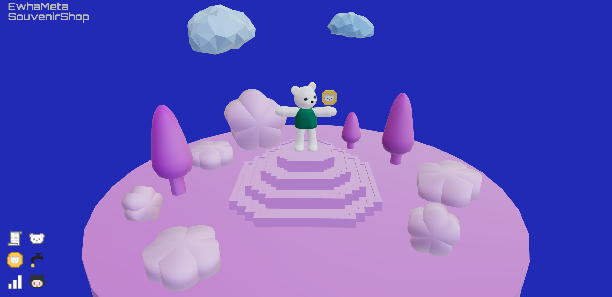

"EwhaMetaSouvenirShop(2021)"은 이화여자대학교 기념품점을 가상세계에 더욱 새롭고 특별한 모습으로 구성해보는 실험적인 프로젝트다.
해마다 본교 학생들은 물론 수많은 방문객들과 관광객들이 이화여대 기념품점에 방문하여 기념품을 사가고 학교 캠퍼스의 일부 시설을 이용한다.
이화기념품점은 이화를 상징하는 이화 기념품들만의 고유한 가치를 보증하고 학교의 방문객들과 관광객들을 위한 특별한 서비스를 제공하기 위해,
블록체인 기술을 적극 도입하여 이화가상기념품점 플랫폼을 구축하고 이화기념코인(ECC)을 발행하였다.
이화기념코인(ECC)는 대체가능토큰(FT)으로 이화기념품점과 이화여대 캠퍼스 시설을 이용하는 이들에게 많은 기능과 편리함을 제공한다.
누구나 은행이나 카드사 등을 통하지 않고 온라인 상에서 시공간 제약없이 이화기념코인(ECC)을 매수하고 매도하여 화폐처럼 사용할 수 있다.
따라서 국내 방문객 뿐만 아니라 외국인 방문객까지 누구나 쉽게 접근하고 이용할 수 있다.
이화여대 방문객이나 관광객들은 이화기념품점에서 이화기념코인으로 방문증을 구입해야만 교내 시설을 이용할 수 있고 특별한 서비스를 제공받을 수 있다.
이화가상기념품점(EwhaMetaSouvenirShop)에서 취급하는 모든 상품들은 대체불가능토큰(NFT)으로 발행되었다.
이로써 이화기념품점의 모든 상품의 저작권이 이화여자대학 측에 있음을 증명하고, 정품임을 표시하며 고유하고 특별한 가치를 가진 기념품임을 증명한다.
이화가상기념품을 구입한 사람은 기념품을 다른 사람에게 팔 수 있다.
이러한 행위는 이화기념품점을 직접 방문하지 않고도 이화가상기념품점 온라인 플랫폼을 통해 가능하다.
이화여대에서는 이화가상기념품점을 통해 얻은 모든 수익을 학생 교육과 학교 시설 그리고 이화기념품점 발전과 유지에 사용한다.
<유의사항>
이 프로젝트는 현재 실험적인 초기 단계로 실제로 기능하지는 않으며 단지 테스트용으로 사용할 수 있다.
거대한 프로젝트지만 현재 전시되고 있는 부분은 이화가상기념품점의 웹 플랫폼이며, 이 웹 플랫폼에서 이화기념코인을 제공받아 이화가상기념품을 구매할 수 있다.
이화기념코인(ECC)은 이더리움 상의 'Ropsten' 테스트넷에 발행되어 테스트용 즉, 가짜돈과 같은 개념으로 사용할 수 있다.
이화기념코인의 스마트계약(smart contract) 등 구체적인 기능과 내용은 아직 기획 단계에 있다.
이화기념품은 원칙적으로 이화기념코인(ECC)으로 거래되는 것으로 설정했으나 사실상 현재 이화기념코인은 테스트용에 불과하므로 실제 이화기념품을 NFT로 발행하지는 않았다.
현재는 테스트용으로 제작된 이화기념품 디지털 파일이 이화가상기념품점 웹 플랫폼에 전시되어있으며,
해당 웹 플랫폼에 방문한 사람들은 '메타마스크'라는 프로그램을 테스트넷 상의 이화기념코인(ECC)을 테스트용 이더리움으로 매수하여 이화기념품디지털 파일을 구매하고 소유권을 얻을 수 있다.
이 프로젝트는 최종적으로 이화가상기념품점과 이화기념코인이 메인넷에 발행되어 실제로 기능하고 작동하는 것을 목표로 하고 있다.
EwhaMetaSouvenirShop(2021~)
이화가상기념품점
사이트: https://ank-umi.github.io/Exhibition/EwhaMetaSouvenirShop/index.html
깃허브: https://github.com/ANK-UMI/EwhaMetaSouvenirShop
+
코인 깃허브: https://github.com/ANK-UMI/EwhaCommemorativeCoin
계약주소: 0xCcD156e2c724c18b6BA8e4F224CE94668bE6990B
이더스캔: https://ropsten.etherscan.io/address/0xCcD156e2c724c18b6BA8e4F224CE94668bE6990B
※ MetaMask의 'Ropsten' 테스트넷 상에서 'Ropsten 테스트 이더리움'으로 이화기념코인(ECC)를 매수할 수 있지만 테스트용 코인으로 실제로 거래할 수는 없다.
